OCC: Orbital-Optimized Coupled-Cluster and Møller–Plesset Perturbation Theories¶
Code author: Ugur Bozkaya
Section author: Ugur Bozkaya
Module: Keywords, PSI Variables, OCC
Introduction¶
Orbital-optimized methods have several advantages over non-optimized counterparts. Once the orbitals are optimized, the wave function will obey the Hellmann-Feynman theorem for orbital rotation parameters. Therefore, there is no need for orbital response terms in the evaluation of analytic gradients. In other words, it is unnecessary to solve the first order coupled-perturbed CC and many-body perturbation theory (MBPT) equations. Further, computation of one-electron properties is easier because there are no response contributions to the particle density matrices (PDMs). Moreover, active space approximations can be readily incorporated into the CC methods [Krylov:2000:vod]. Additionally, orbital-optimized coupled-cluster avoids spurious second-order poles in its response function, and its transition dipole moments are gauge invarianti [Pedersen:1999:od].
Another advantage is that the orbital-optimized methods does not suffer from artifactual symmetry-breaking instabilities [Crawford:1997:instability], [Sherrill:1998:od], [Bozkaya:2011:omp2], and [Bozkaya:2011:omp3]. Further, Kurlancheek and Head-Gordon [Kurlancek:2009] demonstrated that first order properties such as forces or dipole moments are discontinuous along nuclear coordinates when such a symmetry breaking occurs. They also observed that although the energy appears well behaved, the MP2 method can have natural occupation numbers greater than 2 or less than 0, hence may violate the N-representability condition. They further discussed that the orbital response equations generally have a singularity problem at the unrestriction point where spin-restricted orbitals become unstable to unrestriction. This singularity yields to extremely large or small eigenvalues of the one-particle density matrix (OPDM). These abnormal eigenvalues may lead to unphysical molecular properties such as vibrational frequencies. However, orbital optimized MP2 (hence Orbital optimized MP3) will solve this N-representability problem by disregarding orbital response contribution of one-partical density matrix.
Although the performance of coupled-cluster singles and doubles (CCSD) and orbital-optimized CCD (OD) is similar, the situation is different in the case of triples corrections, especially at stretched geometries [Bozkaya:2012:odtl]. Bozkaya and Schaefer demonstrated that orbital-optimized coupled cluster based triple corrections, especially those of asymmetrics, provide significantly better potential energy curves than CCSD based triples corrections.
Theory¶
What follows is a very basic description of orbital-optimized Møller–Plesset perturbation theory as implemented in PSI4. We will follow our previous presentations ([Bozkaya:2011:omp2], [Bozkaya:2011:omp3], and [Bozkaya:2012:odtl])
The orbital variations may be expressed by means of an exponential unitary operator

where 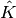 is the orbital rotation operator

The effect of the orbital rotations on the MO coefficients can be written as

where  is the initial MO coefficient matrix and 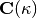 is the new
MO coefficient matrix as a function of
is the initial MO coefficient matrix and 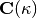 is the new
MO coefficient matrix as a function of  .
Now, let us define a variational energy functional (Lagrangian) as a function of
.
Now, let us define a variational energy functional (Lagrangian) as a function of
- OMP2

- OMP3
![\widetilde{E}({\bf \kappa}) &= \langle 0| \hat{H}^{\kappa} | 0 \rangle \\
&+ \langle 0| \big(\hat{W}_{N}^{\kappa}\hat{T}_{2}^{(1)}\big)_{c} | 0 \rangle
\ + \ \langle 0| \big(\hat{W}_{N}^{\kappa}\hat{T}_{2}^{(2)}\big)_{c} | 0 \rangle \\
&+ \langle 0| \{\hat{\Lambda}_{2}^{(1)} \ \big(\hat{f}_{N}^{\kappa} \hat{T}_{2}^{(1)}
\ + \ \hat{W}_{N}^{\kappa} \big)_{c}\}_{c} | 0 \rangle \\
&+ \langle 0| \{\hat{\Lambda}_{2}^{(1)} \ \big(\hat{f}_{N}^{\kappa} \hat{T}_{2}^{(2)}
\ + \ \hat{W}_{N}^{\kappa}\hat{T}_{2}^{(1)} \big)_{c}\}_{c} | 0 \rangle \\
&+ \langle 0| \{\hat{\Lambda}_{2}^{(2)} \ \big(\hat{f}_{N}^{\kappa} \hat{T}_{2}^{(1)}
\ + \ \hat{W}_{N}^{\kappa} \big)_{c}\}_{c} | 0 \rangle](_images/math/b3dfcfaec81d5533065d5901616e42cb40a8e67d.png)
- OCEPA
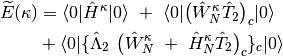
where subscript c means only connected diagrams are allowed, and 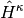, 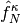, and 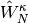 defined as

where 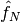, and  are the one- and two-electron components of normal-ordered Hamiltonian. Then,
first and second derivatives of the energy with respect to the parameter at 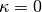
are the one- and two-electron components of normal-ordered Hamiltonian. Then,
first and second derivatives of the energy with respect to the parameter at 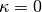


Then the energy can be expanded up to second-order as follows
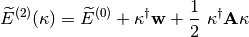
where 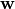 is the MO gradient vector, is the MO rotation vector,
and  is the MO Hessian matrix. Therefore, minimizing the energy with respect to
yields
is the MO Hessian matrix. Therefore, minimizing the energy with respect to
yields

This final equation corresponds to the usual Newton-Raphson step.
Publications resulting from the use of the OMP2 code should cite the following publications:
[Bozkaya:2011:omp2] and [Bozkaya:2013:omp2grad].
Publications resulting from the use of the OMP3 code should cite the following publications:
[Bozkaya:2011:omp3] and [Bozkaya:2013:omp3].
Publications resulting from the use of the OMP2.5 code should cite the following publications:
[Bozkaya:2011:omp3] and [Bozkaya:2013:omp3].
Publications resulting from the use of the OCEPA code should cite the following publication(s):
Publications resulting from the use of the MP2 code should cite the following publication(s):
Publications resulting from the use of the MP3 code should cite the following publications:
[Bozkaya:2011:omp3] and [Bozkaya:2013:omp3].
Publications resulting from the use of the MP2.5 code should cite the following publications:
[Bozkaya:2011:omp3] and [Bozkaya:2013:omp3].
Publications resulting from the use of the CEPA0 code should cite the following publication(s):
Convergence Problems¶
For problematic open-shell systems, we recommend to use the ROHF or DFT orbitals as an initial guess for orbital-optimized methods. Both ROHF and DFT orbitals generally provide much better initial guesses than UHF orbitals, hence convergence may be significantly speeded up with ROHF or DFT orbitals. In order to use ROHF orbitals we can simply use “reference rohf” option. For DFT orbitals one should use “reference uks” and “dft_functional b3lyp” options. Of course users can use any DFT functional available in Psi4.
Methods¶
The conventional and orbital-optimized MP2 methods currently supported in PSI4 are outlined in Table OMP2 Methods.
Name Calls Method Energy Gradient Reference conv-mp2 MP2 Y Y RHF/ROHF/UHF omp2 Orbital-Optimized MP2 Y Y RHF/ROHF/UHF/RKS/UKS scs-omp2 Spin-Component Scaled Orbital-Optimized MP2 Y N RHF/ROHF/UHF/RKS/UKS sos-omp2 Spin-Opposite Scaled Orbital-Optimized MP2 Y N RHF/ROHF/UHF/RKS/UKS scsn-omp2 A special version of SCS-OMP2 for nucleobase interactions Y N RHF/ROHF/UHF/RKS/UKS scs-omp2-vdw A special version of SCS-OMP2 (from ethene dimers) Y N RHF/ROHF/UHF/RKS/UKS sos-pi-omp2 A special version of SOS-OMP2 for 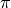-systems Y N RHF/ROHF/UHF/RKS/UKS
The conventional and orbital-optimized MP3 methods currently supported in PSI4 are outlined in Table OMP3 Methods.
Name Calls Method Energy Gradient Reference mp3 MP3 Y Y RHF/UHF omp3 Orbital-Optimized MP3 Y Y RHF/ROHF/UHF/RKS/UKS scs-omp3 Spin-Component Scaled Orbital-Optimized MP3 Y N RHF/ROHF/UHF/RKS/UKS sos-omp3 Spin-Opposite Scaled Orbital-Optimized MP3 Y N RHF/ROHF/UHF/RKS/UKS scsn-omp3 A special version of SCS-OMP3 for nucleobase interactions Y N RHF/ROHF/UHF/RKS/UKS scs-omp3-vdw A special version of SCS-OMP3 (from ethene dimers) Y N RHF/ROHF/UHF/RKS/UKS sos-pi-omp3 A special version of SOS-OMP3 for -systems Y N RHF/ROHF/UHF/RKS/UKS
The conventional and orbital-optimized MP2.5 methods currently supported in PSI4 are outlined in Table OMP2.5 Methods.
Name Calls Method Energy Gradient Reference mp2.5 MP2.5 Y Y RHF/UHF omp2.5 Orbital-Optimized MP2.5 Y Y RHF/ROHF/UHF/RKS/UKS
The conventional and orbital-optimized CEPA methods currently supported in PSI4 are outlined in Table OCEPA Methods.
Name Calls Method Energy Gradient Reference ocepa Orbital-Optimized CEPA Y Y RHF/ROHF/UHF/RKS/UKS scs-ocepa Spin-Component Scaled Orbital-Optimized CEPA Y N RHF/ROHF/UHF/RKS/UKS sos-ocepa Spin-Opposite Scaled Orbital-Optimized CEPA Y N RHF/ROHF/UHF/RKS/UKS cepa0 CEPA(0) (identical to Linearized CCD) Y Y RHF/UHF
Basic Keywords¶
E_CONVERGENCE¶
Convergence criterion for energy. See Table Post-SCF Convergence for default convergence criteria for different calculation types.
- Type: conv double
- Default: 1e-6
R_CONVERGENCE¶
Convergence criterion for amplitudes (residuals).
- Type: conv double
- Default: 1e-5
RMS_MOGRAD_CONVERGENCE¶
Convergence criterion for RMS orbital gradient. Default adjusts depending on E_CONVERGENCE
- Type: conv double
- Default: 1e-6
MAX_MOGRAD_CONVERGENCE¶
Convergence criterion for maximum orbital gradient
- Type: conv double
- Default: 1e-3
MO_MAXITER¶
Maximum number of iterations to determine the orbitals
- Type: integer
- Default: 50
Advanced Keywords¶
OPT_METHOD¶
The optimization algorithm. Modified Steepest-Descent (MSD) takes a Newton-Raphson (NR) step with a crude approximation to diagonal elements of the MO Hessian. The ORB_RESP option obtains the orbital rotation parameters by solving the orbital-reponse (coupled-perturbed CC) equations. Additionally, for both methods a DIIS extrapolation will be performed with the DO_DIIS = TRUE option.
- Type: string
- Possible Values: MSD, ORB_RESP
- Default: ORB_RESP
MO_DIIS_NUM_VECS¶
Number of vectors used in orbital DIIS
- Type: integer
- Default: 6
LINEQ_SOLVER¶
The solver will be used for simultaneous linear equations.
- Type: string
- Possible Values: CDGESV, FLIN, POPLE
- Default: CDGESV
ORTH_TYPE¶
The algorithm for orthogonalization of MOs
- Type: string
- Possible Values: GS, MGS
- Default: MGS
MP2_OS_SCALE¶
MP2 opposite-spin scaling value
- Type: double
- Default: 6.0/5.0
MP2_SS_SCALE¶
MP2 same-spin scaling value
- Type: double
- Default: 1.0/3.0
MP2_SOS_SCALE¶
MP2 Spin-opposite scaling (SOS) value
- Type: double
- Default: 1.3
MP2_SOS_SCALE2¶
Spin-opposite scaling (SOS) value for optimized-MP2 orbitals
- Type: double
- Default: 1.2
OCC_ORBS_PRINT¶
Do print OCC orbital energies?
- Type: boolean
- Default: false
TPDM_ABCD_TYPE¶
How to take care of the TPDM VVVV-block. The COMPUTE option means it will be computed via an IC/OOC algoritm. The DIRECT option (default) means it will not be computed and stored, instead its contribution will be directly added to Generalized-Fock Matrix.
- Type: string
- Possible Values: DIRECT, COMPUTE
- Default: DIRECT
DO_LEVEL_SHIFT¶
Do apply level shifting?
- Type: boolean
- Default: true
OCC: Conventional Møller–Plesset Perturbation Theories¶
Module: Keywords, PSI Variables, OCC
PSI4 also has a non-density-fitted MP2 algorithm for RHF and UHF energies and gradients. The density-fitted module DFMP2 is always the default, so to access the conventional MP2 code, set MP2_TYPE to conv and call as usual energy('mp2')/optimize('mp2').
Basic Keywords¶
MP2_TYPE¶
Algorithm to use for non-OO MP2 computation
- Type: string
- Possible Values: DF, CONV
- Default: DF
MP2_OS_SCALE¶
MP2 opposite-spin scaling value
- Type: double
- Default: 6.0/5.0
MP2_SS_SCALE¶
MP2 same-spin scaling value
- Type: double
- Default: 1.0/3.0
Non-orbital-optimized counterparts to higher order MPn methods are also available. Summarizing from tables above, the following methods are available and can be controlled through OCC keywards.
Name Calls Method Energy Gradient Reference conv-mp2 MP2 Y Y RHF/ROHF/UHF mp3 MP3 Y Y RHF/UHF mp2.5 MP2.5 Y Y RHF/UHF cepa0 CEPA(0) (identical to Linearized CCD) Y Y RHF/UHF